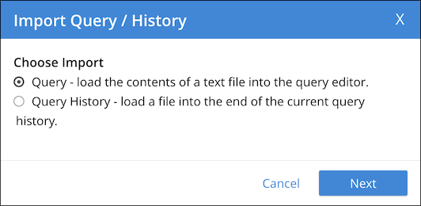
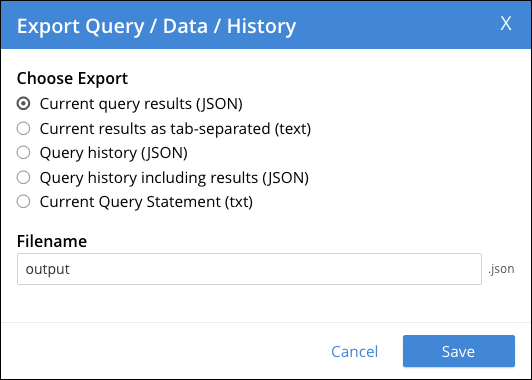
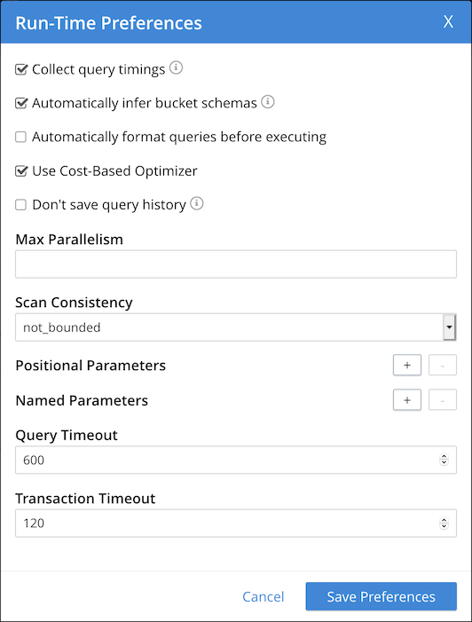

Query Workbench
The Query Workbench provides a rich graphical user interface to perform query development.
Using the Query Workbench, you can conveniently explore data, create, edit, run, and save SQL++ queries, view and save query results, and explore the document structures in a keyspace — all in a single window.
Features of the Query Workbench include:
-
A single, integrated visual interface to perform query development and testing.
-
Easy viewing and editing of complex queries by providing features such as multi-line formatting, copy-and-paste, syntax coloring, auto completion of SQL++ keywords and keyspace and field names, and easy cursor movement.
-
View the structure of the documents in a keyspace by using the SQL++ INFER command. You no longer have to select the documents at random and guess the structure of the document.
-
Display query results in multiple formats: JSON, table, and so on. You can also save the query results to a file on disk.
From the Couchbase Web Console select the Query menu. By default, the Query Workbench tab is displayed.
| The Query Workbench only runs on nodes which are running the Query service. If the Query service is not running on the current node, it provides a link to the nodes in the cluster which are running the Query service. |
The Query Workbench consists of three working areas as shown in the following figure:
-
Explore Your Data — for data insights
-
Results — for query results and plans
Using the Query Editor
The Query Editor is where you enter and edit queries.
The Query Editor provides the following additional features:
-
Syntax coloring — For easy viewing, SQL++ keywords, numbers and string literals are differently colored.
-
Auto-completion — When entering a keyword in the Query editor, if you press the Tab key or Ctrl+Space, the tool offers a list of matching SQL++ keywords and keyspace names that are close to what you have typed so far. For names that have a space or a hyphen (-), the auto-complete option includes back quotes around the name.
-
Auto-formatting — Click the format icon to reflow and indent the query to enhance readability.
Click the double-headed arrow icon to enlarge the Query Editor and Results areas — the Explore Your Data area is resized accordingly.
Run a Query
After entering a query, you can execute the query either by typing a semicolon (;) and pressing Enter, or by clicking the Execute button.
When the query is running, the Execute button changes to Cancel, which allows you to cancel the running query.
When you cancel a running query, it stops the activity on the server side as well.
After running the query, you can view the query results, view the query execution plan, or get index advice for the query.
| The Cancel button does not cancel index creation statements. The index creation continues on the server side even though it appears to have been canceled from the Query Workbench. |
You can also run a sequence of statements in the Query Editor.
Each statement must be terminated with a semicolon.
After each statement, you must press Shift+Enter to start a new line without executing the query.
When you enter the last statement, you can run the sequence of statements either by typing a semicolon (;) and pressing Enter, or by clicking the Execute button.
Run a Transaction
You can use the Query Editor to execute a Couchbase transaction. To execute a transaction containing multiple statements, compose the sequence of statements in the Query Editor. Each statement must be terminated with a semicolon. After each statement, you must press Shift+Enter to start a new line without executing the query. You can then click Execute to execute the transaction.
You can also use the Query Editor to execute a single statement as a transaction. Simply enter the statement in the Query Editor and click Run as TX.
In either case, you do not need to specify the txid parameter or the tximplicit parameter.
If you need to specify any other parameters for the Couchbase transaction, you can use the query run-time preferences window.
Set Query Context
You can set the query context using the query context drop-down menu at the top right of the Query Editor. This specifies the bucket and scope used to resolve partial keyspace references within the request. When the query context is set, you can write queries using just the collection names, without having to enter the keyspace path.
The query context drop-down menu does not enable you to specify a namespace for the query context.
Currently, only the default namespace is available.
The default namespace is used for the query context.
To set the query context:
-
Using the context controls at the top right of the Query Editor, open the bucket drop-down menu and select the required bucket. When a bucket is selected, a scope drop-down menu is displayed to the right.
-
Open the scope drop-down menu and select the required scope.
To unset the query context, using the context controls at the top right of the Query Editor, open the bucket drop-down menu and select unset.
The scope drop-down menu disappears.
To set the query context from the cbq shell or the REST API, use the query_context request-level parameter.
For more information on scopes and collections, refer to Scopes and Collections.
View Query History
The tool maintains a history of all the queries executed. If you edit a previous query and execute it, the new query is stored at the end of the history. The history is persistent across browser sessions. The query history only saves queries; due to limited browser storage it does not save query results. Thus, when you restart the browser or reload the page, you can see your old queries, but you must re-execute the queries if you want to see their results.
| Clearing the browser history clears the history maintained by the Query Editor as well. |
Click the history link, at the top of the editor, to open the Query History window. When the window opens, the current query is selected.
-
You can scroll through the entire query history, and click to select an individual query.
-
You can search the query history by entering a text in the search box located on the top. All matching queries are displayed. If no matching query is found, then the entire history is displayed.
-
To delete a specific entry, select a query, then click Delete Selected. The query is deleted from the history.
-
To delete all entries, click Delete All. The entire query history is deleted.
-
To re-run a specific query, select a query, then click Close & Run. The query history is closed and the query is re-run.
-
To close the query history, click Close. The query history is closed without making any further changes.
History Status
The currently shown position in the history is indicated by the numbers next to the history link. For example, (151/152) indicates that query #151 is currently shown, out of a total history length of 152 queries. Use the forward or back arrowhead icons to move to the next or previous query in the history. The forward arrowhead icon can also create a new blank query when you are already at the end of the query history.
Import Data
You can load a query from a file into the Query Editor, or load a set of queries from a file into the query history.
-
Click Import to display the Import Query / History window.
 -
Specify the data that you want to import:
- Query
-
Loads the imported query into the Query Editor.
- Query History
-
Adds the imported queries to the end of the current query history.
-
Choose Next to continue, or Cancel to cancel.
| The browser’s Open File dialog is displayed. Locate and open a text file or JSON file containing the data you want to import. |
Alternatively, you can drag and drop the file from the Desktop into the Query Editor to a load a file. The content of the file is added in the Query Editor as a new query at the end of the history.
Export Data
You can export the query statement, query results, or query history.
-
Click Export to display the Export Query / Data / History window.
 -
Specify the data that you want to export:
- Current query results (JSON)
-
Exports the results in the JSON file format.
- Current results as tab-separated (text)
-
Exports the results as tab-separated text.
- Query history (JSON)
-
Exports just the query history in the JSON file format.
- Query history including results (JSON)
-
Exports the query history and results in the JSON format.
- Current Query Statement
-
Exports the current query statement in the .txt format.
-
In the Filename box, specify the name of the file where data is to be saved. The file extension is added automatically. By default, the query is saved in the Downloads directory when using Firefox and Chrome browsers.
-
Choose Save to export the data, or Cancel to cancel.
| When using Safari, clicking Save loads the data into a new window. You have to save the file manually using the menu. |
Query Preferences
To specify the query settings:
-
Click the cog icon near the top right of the Query Workbench. The Run-Time Preferences window is displayed.
 -
Define the following options:
- Collect query timings
-
The server records the timing for most operations in the query plan, showing the updated query plan with the query result. Both graphical and textual query plans are updated with the timing information when the query is complete.
- Automatically infer bucket schemas
-
The query workbench automatically infers keyspace schemas to make field names available for autocompletion. In some cases this may impact server performance.
- Automatically format queries before executing
-
The query workbench automatically formats queries with line breaks and indentation before executing.
- Use Cost-Based Optimizer
-
Specifies whether the cost-based optimizer is enabled.
- Don’t save query history
-
Disables auto-saving query history to local storage in your browser. This is a consideration for shared machines. When selected, any query history will be lost when you leave or refresh the query workbench.
- Max Parallelism
-
Specifies the maximum parallelism for the query. If you do not specify, the cbq-engine uses its default value. For more information, refer to the max_parallelism parameter.
- Scan Consistency
-
Specifies the consistency guarantee for index scanning. Select one of the following options:
-
not_bounded
-
request_plus
-
statement_plus
For more information, refer to the scan_consistency parameter.
-
- Positional Parameters
-
For prepared queries, this option allows you to specify values for any number of positional parameters. Click the + button to add new positional parameters, and the - button to remove the parameters. The parameters are automatically labelled as $1, $2, and so on.
- Named Parameters
-
For prepared queries, this option allows you to specify any number of named parameters. Named parameters must start with the dollar sign ($) for use in prepared queries. Otherwise, they are interpreted as parameters to the Query REST API.
- Query Timeout
-
Specifies the maximum time to spend on a query before timing out. For more information, refer to the timeout parameter.
- Transaction Timeout
-
Specifies the maximum time to spend on a transaction before timing out. Only applies to BEGIN TRANSACTION statements, or statements executed with the Run as TX button. For more information, refer to the txtimeout parameter.
-
Choose Save Preferences to save the preferences, or Cancel to cancel.
Viewing the Data Insights
The Explore Your Data area displays all installed keyspaces in the cluster. By default, when the Query Workbench is first loaded, it retrieves a list of available keyspaces from the cluster. The Explore Your Data area is automatically refreshed when keyspaces or indexes are added or removed.
Click the double-headed arrow icon to enlarge the Explore Your Data area — the Query Editor and Results areas are resized accordingly.
Within the Explore Your Data area, buckets, scopes, and collections are displayed in a hierarchy, which you can expand or collapse.
-
To expand a heading within the hierarchy, click the heading, or click the rightward-pointing arrowhead before the heading.
-
To collapse a heading within the hierarchy, click the heading again, or click the downward-pointing arrowhead before the heading.
Buckets are displayed at the top level of the hierarchy. When you expand a bucket, the scopes within that bucket are displayed below it. Similarly, when you expand a scope, the collections within that scope are displayed below it.
The number of collections within the bucket is displayed to the right of the bucket heading. Similarly, the number of documents within a collection is displayed to the right of the collection heading. You may need to refresh the Explore Your Data area to see these figures. [1]
When you expand a collection, one or more headings are displayed showing the flavors (types) of document stored within that collection. The percentage of documents of each flavor is shown to the right. If there are any indexes within that collection, an Indexes heading is also displayed, showing the indexes within the collection.
You can expand any document flavor to view the schema for those documents: field names, types, and if you hover the mouse pointer over a field name, you can see example values for that field. Keyspace analysis is based on the SQL++ INFER statement, which you can run manually to get more detailed results.
You can expand the Indexes heading to view the names and definitions of the indexes within the collection.
The information in the Explore Your Data area is updated regularly, but it may take a short time to reflect recent changes. To force the Explore Your Data area to update, click Refresh.
Viewing the Query Results
When you execute a query, the results are displayed in the Results area. Since large result sets can take a long time to display, we recommend using the LIMIT clause as part of your query when appropriate.
When a query finishes, the query metrics for that query are displayed to the right of the Execute button.
- Status
-
Shows the status of the query. The values can be: success, failed, or HTTP codes.
- Elapsed
-
Shows the overall query time.
- Execution
-
Shows the query execution time.
- Result Count
-
Shows the number of returned documents.
- Mutation Count
-
Shows the number of documents deleted or changed by the query. This appears only for UPDATE and DELETE queries instead of Result Count.
- Result Size
-
Shows the size in bytes of the query result.
You can choose to view the results in several different formats. The sections below display the result of the following query in each of the available formats.
SELECT r.airline, COUNT(1) num_routes, SUM(ARRAY_COUNT(r.schedule)) schedules
FROM `travel-sample`.inventory.route r
WHERE r.sourceairport = 'SFO'
GROUP BY r.airline, r.schedule;JSON Format
Click JSON to display the results in JSON format. The results are highlighted to make the data easy to read. You can also expand and collapse objects and array values using the small arrow icons next to the line numbers.
Click the copy icon to copy the query results to the clipboard in tab-separated format.
Click the search icon to search the results for the text you specify.
Table Format
Click Table to present the results in a tabular format. The tool converts the JSON documents to HTML tables, and presents sub-objects or sub-arrays as sub-tables. This format works well for queries that return an array of objects. You can hover the mouse pointer over a data value to see the path to that value in a tool tip. You can sort a column by clicking the column header.
Click the copy icon to copy the query results to the clipboard in tab-separated format.
Chart Format
You can click Chart to present the results as a chart, as long as your query returns a suitable data series.
You can select the type of chart and the data options from the drop-down controls at the top left of the chart.
To select the type of chart, open the Chart Type drop-down list ① and select a format for the chart: X-Y, Connected Points, Line, Area, Bar, Grouped Bar, Pie, or Donut.
For X-Y, Connected Points, Line, and Area charts:
-
Open the X-Axis drop-down list and select the field for the x-axis of the chart.
-
Open the Y-Axis drop-down list and select the field for the y-axis of the chart.
For X-Y charts only: open the Color drop-down list and select a color for the data points.
For Bar, Grouped Bar, Pie, and Donut charts:
-
Open the Label drop-down list ② and select the field by which to categorize the data.
-
Use the Value(s) list ③ to specify the data series to be rendered on the chart.
Click the download icon to download the chart in SVG format.
Query Plans
Each time a query is executed, an EXPLAIN command is automatically run in the background to retrieve the query plan for that query.
To display the query plan, click the Plan link or the Plan Text link in the Results area. You may also generate the query plan and display the plan in graphical format by clicking Explain.
The sections below display the plan for the following query in each of the available formats.
SELECT * FROM `travel-sample`.inventory.airline LIMIT 1;Plan
This is where the results are presented in a graphical format.
① At the top, there is a summary which also shows lists of the keyspaces, indexes, and fields used by the query.
② At the bottom is a data-flow diagram of query operators, with the initial scans at the right, and the final output on the left. Potentially expensive operators are highlighted.
Once the query is complete, if you have selected the Collect query timings option in the preferences dialog, the query plan will be updated with timing information (where available) for each operation.
The data flow generally follows these steps:
-
Scan
-
Fetch
-
Filter
-
Projection (part 1)
-
Order
-
Projection (part 2)
| Projection is split into two parts (one before Order and one after Order), but Query Workbench shows only the first part. |
Clicking on any unit of the plan shows more details of it.
In general, the preference of scan is:
-
Covering Index
-
Index Scan
-
Intersect Scan
-
Union Scan, and finally
-
Fetch
Index Advisor
When you execute a SELECT query, a MERGE query, an UPDATE query, or a DELETE query, an ADVISE command is automatically run in the background to generate index advice for that query.
To display the index advice in graphical format, click the Advice link in the Results area. You may also generate the index advice and display the advice in graphical format by clicking Index Advisor.
Unresolved include directive in modules/tools/pages/query-workbench.adoc - include::n1ql:partial$n1ql-language-reference/advice-workbench.adoc[]
Advice
If there is any index advice for this query, the results of the Index Advisor are displayed under one or more of the following possible headings.
- Indexes Currently Used
-
The index or indexes currently used by this query are listed under this heading. (The exact name of this heading reflects the number of indexes that the query uses.)
- Index Recommendations
-
If the Index Advisor can recommend any secondary indexes, array indexes, functional indexes, or partial indexes for this query, they are listed under this heading.
You can click Create & Build Indexes to create and build these recommended indexes. (The exact name of this button reflects the number of indexes that the Index Advisor recommends.) This process may take a while.
- Covered Index Recommendations
-
If the Index Advisor can also recommend any covering indexes for this query, in addition to the secondary indexes, array indexes, functional indexes, or partial indexes, they are listed under this heading.
You can click Create & Build Covered Indexes to create and build these recommended indexes. (The exact name of this button reflects the number of covering indexes that the Index Advisor recommends.) This process may take a while.
If there is no index advice for this query, the results area may display the one of the following messages:
-
Existing Indexes are Sufficient— the existing indexes are sufficient for this query. -
No index recommendation at this time— the Index Advisor cannot recommend a query. -
Advise supports SELECT, MERGE, UPDATE and DELETE statements only— this query is not suitable for the Index Advisor. -
Click 'Advise' to generate query index advice— the Index Advisor has not yet been run.
Refer to Recommendation Rules for details of the rules that the index advisor uses to recommend an index.